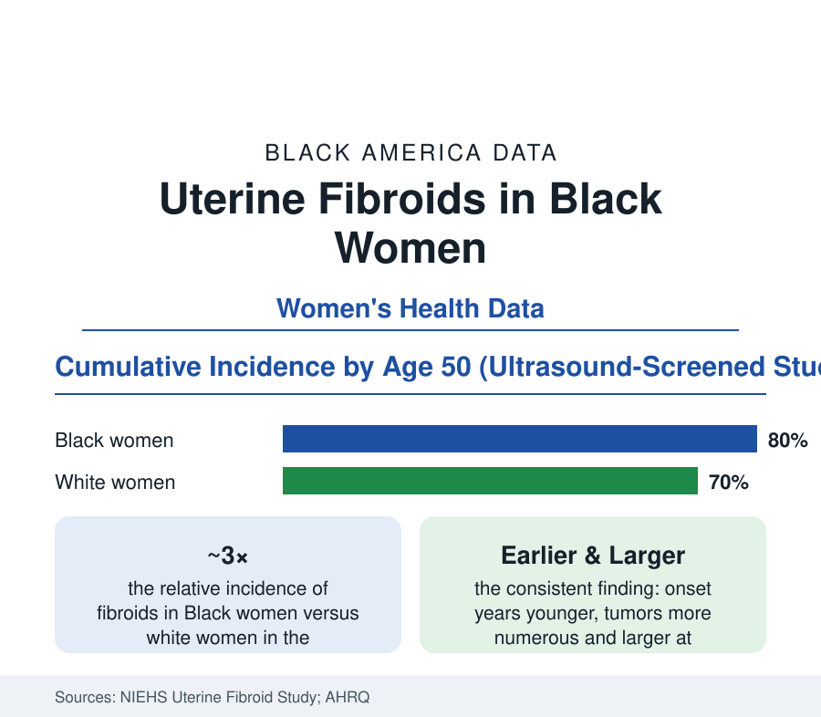

Black Public Health
Uterine Fibroids in Black Women: The Most Unequal Benign Condition in American Medicine
By age 50, an estimated 70–80% of Black women have uterine fibroids — earlier, larger, and more numerous than in any other group. The epidemiology, treatment, and research data.

Uterine fibroids — benign tumors of the uterine muscle — are so common in Black women that the screening studies read almost like a census: in the NIEHS Uterine Fibroid Study's ultrasound screening of women regardless of symptoms, fibroids were found in the large majority of Black women by their late forties, at roughly three times the age-adjusted incidence of white women, appearing years earlier and growing larger. It is the leading indication for hysterectomy in the United States, the most unequal benign condition in the data, and — the research file shows — among the least funded relative to its burden. This article reports the numbers.
Prevalence: What Screening Finds That Diagnosis Misses
The condition's epidemiology turns on method: diagnosed-case data undercount massively, because many fibroids never cause symptoms and imaging is unevenly distributed. The screening studies (ultrasound applied to a sample regardless of symptoms — the NIEHS study and the hospital cohorts) converge on cumulative incidence by age 50 of roughly 70–80% for Black women and around 70% for white women, with the Black curve shifted a decade earlier — incidence already elevated in the twenties in the Nurses' Health Study II's ultrasound-validated analyses. The clinical-difference findings are consistent across the datasets: Black women present with larger uteri, more tumors, greater symptom burden (heavy bleeding, anemia, pelvic pressure, urinary frequency), and higher rates of the downstream consequences — iron-deficiency anemia, infertility and pregnancy complications in the reproductive-medicine data, and the surgical endpoints the next section counts. Risk-factor research (the Black Women's Health Study's prospective analyses) implicates age at first period, reproductive history, and the contested environmental file — including the hair-product chemical exposure studies (relaxers and the phthalate/paraben literature) that the NIEHS Sister Study and its successors keep examining without a settled causal verdict, a state of evidence this article reports as unresolved.
Treatment and the Hysterectomy Endpoint
The treatment data carry the disparity into the operating room. Fibroids are the leading indication for hysterectomy nationally, and Black women undergo hysterectomy at roughly twice the rate of white women in the AHRQ procedure data — at younger ages, and historically with lower access to the uterus-sparing alternatives: myomectomy (surgical removal of the tumors alone), uterine artery embolization, and the newer pharmacologic options (the GnRH-antagonist combinations approved in the current decade for heavy menstrual bleeding). The comparative-effectiveness research (the AHRQ-funded COMPARE-UF registry's patient-reported outcomes) documents that symptom relief is achievable across routes — while the access data show the alternatives concentrated in academic and high-volume centers whose catchments the referral patterns govern. The fertility-preservation file is the sharp edge: women diagnosed in their twenties and thirties, counseled toward surveillance until symptoms force the surgical question, in a system whose default endpoint removes the organ the patient may still be planning a family around — the counseling-quality studies (patients' reports of being offered options) recording gaps by race that the specialty societies' guidelines were written to close.
The Economic and Research Ledger
The burden accounting is the file's rebuke: fibroids' annual cost to the U.S. system — procedures, hospitalizations, lost work — is estimated in the tens of billions of dollars in the health-economics literature, with Black women bearing a disproportionate share of every line and the absenteeism and presenteeism estimates among the largest for any gynecologic condition. Against that burden, the research funding line has historically run at a small fraction of comparable conditions' — the disparity documented in the NIH portfolio analyses that patient-founded organizations (the White Dress Project, the Fibroid Foundation — founded by Black women patients) organized to change, with the current decade's dedicated funding initiatives and the state-level reporting laws as the policy chapter. The clinical-research representation file matters practically here: trials of the newer medical therapies enroll from the populations their catchments give them, and the fibroid literature's own audits flag under-enrollment of the women with the highest burden — the same pattern this section's workforce article records across the trial economy.
Reading the Fibroid Data
Three times the incidence, a decade earlier, larger at presentation, twice the hysterectomy rate, a fraction of the research money: fibroids are the women's-health disparity in its most measurable form — a condition hiding in plain sight at population scale. The data infrastructure now exists to close each of those gaps; what the series will record is whether the system uses it for the women carrying the tumors.
More in Black Public Health
Hypertension Among Black Adults: Prevalence, Control, and Consequences
About 55 percent of Black adults have hypertension — the highest rate of any U.S. group. Prevalence, onset, control, and the stroke, heart, and kidney consequences in the data.
Diabetes Among Black Adults: Prevalence and Complications
Nearly one in five Black adults has diabetes, diagnosed or undiagnosed — and its complications fall with particular weight. The CDC data on prevalence, control, and outcomes.
Black Life Expectancy: The Gap at Birth and Its Causes
Black life expectancy at birth is about 73 years, roughly five years below the national figure — the summary measure of every health gap in this section. The CDC data.
Source: National Institute of Environmental Health Sciences Uterine Fibroid Study; Nurses' Health Study II; Agency for Healthcare Research and Quality; American College of Obstetricians and Gynecologists; Black Women's Health Study.